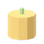
Abóbora
MaterialColheita do canteiro. Faz refeições e biocombustível.
Como obter
- Vendido em lojas dos locais: Floricultura, Mercearia
135 itens do jogo, cada um com o ícone que aparece no inventário, como obter ou fabricar e onde é usado (versão 1.0.504).

Colheita do canteiro. Faz refeições e biocombustível.
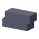
O casulo de ovos da Mãe-teia. Raro.
Não entra em receitas nem blocos.
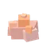
Crosta de rocha incandescente da beira da lava (Cinzas, Brasa; mais crostas depois de cada erupção). Perto dela o chão queima: o traje gasta a bateria e, sem bateria, você perde vida. Na Fundição, com gelo, vira brasalita temperada. Não se compra. Serve para: acumulador térmico (Multiferramenta de plasma, Broca de nave, Broca de extração III, Motor de dobra).
A placa da frente da Garra-de-maré. Dura de furar.
Não entra em receitas nem blocos.
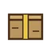
Caixa lacrada achada em casco caído ou à deriva. O Terminal de serviços sabe de quem é.
Sem fonte direta registrada: veja a descrição.
Não entra em receitas nem blocos.
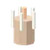
O miolo do espinho do Espinhoso: raro e valioso.
Cristal azul do centro da Geada-viva. Não derrete. Vende bem.
Não entra em receitas nem blocos.
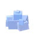
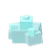
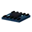
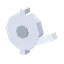
Tirado de um bloco mecânico avariado. O Desmontador separa componentes e placa; o sucateiro compra.
Sem fonte direta registrada: veja a descrição.
Não entra em receitas nem blocos.
Cristal do terreno, das árvores e das pedras (1.0.377: agora é item, fica na mochila, no baú e no porta-malas). É o combustível do Motor de dobra: 60 cristais = 1 salto entre sistemas. Também se vende por 10 créditos, mas quem vende tudo fica sem combustível de salto. Não se compra.
Âmbar que pulsa devagar. Cresce nos ninhos de Seiva. Não serve de combustível.
Sem fonte direta registrada: veja a descrição.
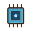
Leitura colhida em torre, ruína ou caverna. A Barca de pesquisa compra.
Sem fonte direta registrada: veja a descrição.
Não entra em receitas nem blocos.
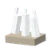
Dente largo e liso da Boca-de-lodo, o predador que dorme no fundo do mar. Vende bem nos locais.
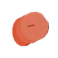
Escama larga e quente do Draco-de-cinza. Vale uma fortuna nos locais.
Não entra em receitas nem blocos.
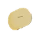
Placa da pele da Cava-areia, áspera como lixa.
Não entra em receitas nem blocos.
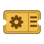
Vale uma unidade do pátio de qualquer ferro-velho: veículo ou nave incompleta, sorteada na retirada. Desmonte e venda, ou reconstrua. Não se vende no local.
Sem fonte direta registrada: veja a descrição.
Não entra em receitas nem blocos.
Vale uma nave de médio a grande porte do Pátio orbital do Cascalho (Ônix): incompleta, sorteada na retirada. Só vale lá. Desmonte e venda, ou reconstrua e registre o chassi. Não se vende no local.
Sem fonte direta registrada: veja a descrição.
Não entra em receitas nem blocos.
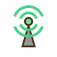
Sintoniza o rádio nas Manufaturas e Frentes de lavra de um planeta. Vendida na Bolsa de cargas.
Sem fonte direta registrada: veja a descrição.
Não entra em receitas nem blocos.
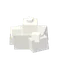
Areia vitrificada pelos raios das tempestades de Duna e Mesa. Só aparece depois de uma tempestade e some em 45 minutos. Dureza 0,8: qualquer Multiferramenta cava. Na Fábrica vira fibra de fulgurito. Não se compra. Serve para: chip de malha (pesquisa Malha lógica).
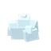
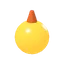
A bolsa de onde o Draco-de-cinza tira o fogo. Ainda morna. Vende bem.
Não entra em receitas nem blocos.
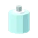
Glândula que brilha no escuro, de monstro. Vende bem.
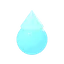
Uma gota d'água que continua se mexendo sozinha, da Vaga-viva.
Não entra em receitas nem blocos.
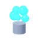
Gás raro das nuvens altas de Titã. Não existe veio: o coletor atmosférico colhe em voo (2 por minuto a 80 m/s). Na Fábrica, 20 de hélio-3 + 1 lingote de titânio viram uma cápsula de combustível do reator de fusão. Não se compra. Serve para: abastecer o Reator de fusão.
Distintivo tirado de um pirata abatido. O Balcão de recompensas paga por ele.
Sem fonte direta registrada: veja a descrição.
Não entra em receitas nem blocos.
Distintivo de capitão corsário. Vale cinco vezes uma insígnia comum no Balcão de recompensas.
Sem fonte direta registrada: veja a descrição.
Não entra em receitas nem blocos.
Metal raro e denso, só nos asteroides. Resiste a calor e pressão extremos. Serve para: ponta de irídio (Broca de nave).
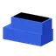
Fundição: 3 de cobalto + 1 de carvão. Entra no núcleo de energia.
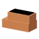
Fundição: 3 de cobre + 1 de carvão. Vira fio de cobre na fábrica.
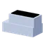
Fundição: 3 de irídio + 2 de carvão. Vira ponta de irídio na fábrica.
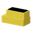
Fundição: 3 de ouro + 2 de carvão.
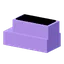
Fundição: 3 de platina + 2 de carvão.
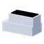
Fundição: 3 de prata + 1 de carvão. Condutor dos circuitos.
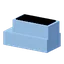
Fundição: 3 de titânio + 2 de carvão. Entra na liga de titânio.
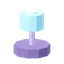
Isca luminosa arrancada da Sombra-d'água, a serpente que ronda o mar fundo. Raríssima: vale uma fortuna nos locais.
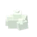
Gelo luminoso dos polos dos corpos gelados (Gelo, Cristal, Pó). DERRETE: a cada 2 minutos cada pilha perde 1 unidade, que vira 1 gelo, e só fica estável num corpo gelado ou numa câmara fria com energia. Sele-o na Fábrica (2 lumigelos + 1 lingote de prata) para guardar sem perder. Não se compra. Serve para: anel criogênico (Motor de dobra, Radar avançado, Coletor atmosférico, Reator de fusão).
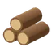
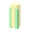
Colheita do canteiro. Faz refeições e biocombustível.
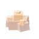
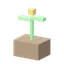
Ponha no Canteiro hidropônico: dá abóboras (rende o dobro por colheita).
Não entra em receitas nem blocos.
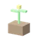
Ponha no Canteiro hidropônico: dá milho sem se gastar.
Não entra em receitas nem blocos.
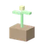
Ponha no Canteiro hidropônico: cresce sozinha e dá trigo sem se gastar.
Não entra em receitas nem blocos.
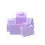
Cristal denso do centro dos asteroides grandes de Ônix (Brita, Bloco, Mó e Dorso), fundo demais para ver da superfície: só o radar mostra. Dureza 3,5: pede a Multiferramenta nível 3 ou a broca de nave. Na Fundição vira nucleíta lapidada. Não se compra. Serve para: foco de nucleíta (Multiferramenta de plasma, Broca de nave).
Não é núcleo de estrutura nem de energia: é o instrumento que fecha a visada. Reúne a leitura viva e a calculada do mesmo ponto. Abre o portal além do Acordo.
Não entra em receitas nem blocos.
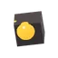
Miolo de brasa que mantém de pé o Brasálito e a Serpente-de-fornalha. Vende bem.
Não entra em receitas nem blocos.
Cristais de gelo e gás que a Baleia-de-anel deixa no rastro. Só se colhe com o Coletor atmosférico ligado.
Não entra em receitas nem blocos.
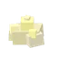
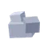
Cascalho: sai ao cavar o terreno com a Multiferramenta (de 1 a 4 por golpe). Serve para aterrar (laser, modo Aterrar: tecla Q), para o concreto (8 + 2 de gelo) e vende-se no mercado. Na peneira da Fundição, 40 de cascalho dão 1 minério comum do corpo (ferro, ou cobre em mundos de lava). Quebrar uma pedra NÃO dá cascalho: dá o minério do bioma.
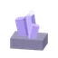
Mineral escuro de brilho frio. Só nasce nas paredes dos salões de caverna; pede laser nível 2. Serve para vender e para montar a Sonda de eco.
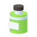
Veneno do Chicote-de-Malva. Vende, e é a base do Antídoto.
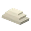
Casca dura de monstro. Vende bem nos locais.
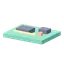
Tirada de um painel avariado. O Desmontador separa circuito e fio; o sucateiro compra.
Sem fonte direta registrada: veja a descrição.
Não entra em receitas nem blocos.
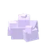
Faz em um instante a conta que uma turma levaria uma vida. A Coletividade só vende a parceiros.
Pérola do tamanho de um punho, da testa do Abissal-de-Preamar.
Não entra em receitas nem blocos.
Fio fino e forte das aranhas das grutas.
Não entra em receitas nem blocos.
Cristal escuro das dunas e das luas. Vira lâmina de silício, base do chip lógico.
Restos de blocos destruídos. A Fundição recicla: 4 de sucata = 1 barra de aço.
Sem fonte direta registrada: veja a descrição.
Colheita do canteiro. Faz refeições.
Vidro natural do fundo das crateras grandes das luas sem ar (Lua, Fobos, Dente). Dureza 1,4: serve a Multiferramenta de nível 2. Na Fundição vira vidro de vitrólita. Não se compra: tem que ser achada. Serve para: lente de vitrólita (Multiferramenta nível 3 e 4, Radar avançado).
Mesa de projeto ou Construtor avançado: 3 de brasalita temperada + 1 liga de titânio + 2 placas (pesquisa Termodinâmica). Guarda e devolve calor: brocas e propulsores fortes.
Mesa de projeto ou Construtor avançado: 2 de lumigelo selado + 6 fios + 1 liga de titânio (pesquisa Criogenia). Mantém o frio de sensores e propulsores.
Mesa de projeto ou Construtor avançado: 2 ímãs de cobalto + 4 fios + 1 componente. Movimento preciso para construtores e brocas.
Fundição: 2 de brasalita + 1 de gelo. Guarda o calor sem queimar: é a base do acumulador térmico.
Construtor avançado: 4 fibras de fulgurito + 2 chips lógicos + 1 lingote de platina (pesquisa Malha lógica). Liga os sensores do radar avançado de grade grande (25 km) e a expansão de núcleo III.
Mesa de projeto ou Construtor avançado: 1 lâmina de silício + 2 circuitos + 1 lingote de ouro. O cérebro dos equipamentos avançados.
Fábrica: 3 fios + 1 lingote de prata. Eletrônica avançada.
Fábrica: 2 de fulgurito rendem 3 fibras. Entra no chip de malha.
Fábrica: 1 lingote de cobre rende 4 fios. Ferramentas, armas de fogo e circuitos.
Construtor avançado: 2 de nucleíta lapidada + 2 lentes de vitrólita + 1 lingote de platina (pesquisa Óptica de potência). Concentra o feixe da Multiferramenta nível 4 e da broca de nave grande.
Fábrica: 1 vidro de vitrólita + 1 lingote de prata (pesquisa Óptica). Focaliza o feixe da Multiferramenta nível 3 e o radar avançado.
Fábrica: 2 lingotes de titânio + 1 barra. Ferramentas industriais e trajes espaciais.
Fábrica: 2 de lumigelo + 1 lingote de prata. Não derrete. Entra no anel criogênico (que vai no Motor de dobra). Não recarrega mais o motor: ele agora anda a cristais.
Fundição: 3 de silício + 1 de carvão. É a base do chip lógico.
Fundição: 3 de nucleíta + 2 de carvão. Entra no foco de nucleíta.
Fábrica: 1 lingote de cobalto + 1 circuito + 1 célula de energia.
Fábrica: 2 barras de aço. Armaduras de metal, espadas e armas de fogo.
Fábrica: 2 lingotes de irídio + 1 liga de titânio. Dente das brocas de extração mais fortes.
Fundição: 3 de vitrólita. Vira lente de vitrólita na Fábrica.
Fábrica: 1 lingote de cobalto + 1 barra rendem 2 ímãs. Entra no atuador magnético.
1 peçonha e 1 kit médico dão 2 antídotos, na Bancada de campo. Cura o Veneno e protege dele por 10 s.
Não entra em receitas nem blocos.
Perto de uma nave caída inteira (a até 40 m), entrega o casco como seu: falta completar os propulsores, o giroscópio e o banco, e registrar o chassi em qualquer mecânico. Vale uma vez por nave e só serve a carcaça inteira (a despedaçada não). Usada LONGE de qualquer carcaça, ela não se gasta: MARCA a nave caída inteira mais perto no mapa (M), na bússola, no minimapa e no radar, com a distância. Se o planeta não tem nenhuma, avisa e diz onde ainda há. Para apagar a marca, clique nela no mapa.
Sem fonte direta registrada: veja a descrição.
Não entra em receitas nem blocos.
Bolo caseiro de milho. Mata a fome e cura um pouco.
Não entra em receitas nem blocos.
Café importado: só se compra nas lojas dos locais. Esquenta, tira um pouco da fome e dá «Desperto» por 5 min: o fôlego volta 30% mais rápido.
Não entra em receitas nem blocos.
Carne crua de bicho do mato. Dá para comer assim mesmo, mas rende mais como espetinho.
Cartuchos para as espingardas.
Não entra em receitas nem blocos.
Não entra em receitas nem blocos.
Faixa e gaze: cura 25 de vida. 1 madeira e 1 fio viram 2 curativos, na mochila ou no Processador.
Não entra em receitas nem blocos.
Para a arpoeira. Debaixo d'água bate forte e vai longe; fora d'água perde a força.
Não entra em receitas nem blocos.
Abóbora, milho e trigo na panela: a refeição mais forte da colônia. Dá «Bem alimentado» por 10 min: a fome passa 25% mais devagar.
Não entra em receitas nem blocos.
Carne de fera na brasa. 2 carnes e 1 madeira viram 2 espetinhos no Processador.
Não entra em receitas nem blocos.
Um tatuzinho de casca azul-gelo, medroso. Use para ganhar a Bolota como companheira: ela avisa quando há hostil por perto.
Sem fonte direta registrada: veja a descrição.
Não entra em receitas nem blocos.
Uma bolinha de luz curiosa. Use para ganhar a Faísca como companheira: de noite, ela ilumina o caminho.
Sem fonte direta registrada: veja a descrição.
Não entra em receitas nem blocos.
Um bichinho cavador de focinho comprido. Use para ganhar a Trufa como companheira: ela fareja pedra de minério por perto.
Não entra em receitas nem blocos.
Para a torreta de foguete: dano alto e longo alcance.
Não entra em receitas nem blocos.
Não entra em receitas nem blocos.
Balas de pistola, revólver, submetralhadora e fuzil de assalto. Também é o que as torretas de sentinela atiram.
Não entra em receitas nem blocos.
Para rifles, rifle de caça e sniper.
Não entra em receitas nem blocos.
Para a torreta de artilharia: um tiro lento de dano enorme e 160 m de alcance.
Não entra em receitas nem blocos.
Filão assado: mata um pouco da fome. 2 trigo viram 3 pães no Processador.
Não entra em receitas nem blocos.
Não entra em receitas nem blocos.
Não entra em receitas nem blocos.
Um pulso sonoro que mostra no radar, por 2 minutos, as bocas de caverna e o oco dos salões a até 2 km.
Não entra em receitas nem blocos.
Torta de abóbora com trigo. Mata a fome e cura um pouco.
Não entra em receitas nem blocos.
Para a besta.
Não entra em receitas nem blocos.
Não entra em receitas nem blocos.
Não entra em receitas nem blocos.
Não entra em receitas nem blocos.
Não entra em receitas nem blocos.
Sem fonte direta registrada: veja a descrição.
Não entra em receitas nem blocos.
Sem fonte direta registrada: veja a descrição.
Não entra em receitas nem blocos.
Sem fonte direta registrada: veja a descrição.
Não entra em receitas nem blocos.
Não entra em receitas nem blocos.
Não entra em receitas nem blocos.
Não entra em receitas nem blocos.
Não entra em receitas nem blocos.
Aço e madeira, sem energia. Desce em mundo protegido. Quebra pedra e planta, não cava o chão. Colhe Cristal Vivo.
Não entra em receitas nem blocos.
Não entra em receitas nem blocos.
Não entra em receitas nem blocos.
Não entra em receitas nem blocos.
Não entra em receitas nem blocos.
Fábrica: 20 de hélio-3 + 1 lingote de titânio. Combustível do Reator de fusão (1 cápsula = 30 minutos em carga cheia). Os outros geradores não aceitam.
O combustível mais denso: rende 25% a mais que a mesma quantidade em combustível mineral nos geradores e abastece veículos e naves (75 por unidade).
Não entra em receitas nem blocos.
Hidrogênio feito do gelo (eletrólise). Abastece o tanque de hidrogênio de naves e veículos (60 por garrafa): dentro do veículo aperte E; fora, Shift+E perto dele. Não serve nos geradores.
Não entra em receitas nem blocos.
Combustível de gerador, 5× mais denso que o mineral (mesma eficiência, só ocupa menos). Não serve para veículos.
Não entra em receitas nem blocos.
Sem fonte direta registrada: veja a descrição.
Não entra em receitas nem blocos.
Nenhum item encontrado com esses filtros.